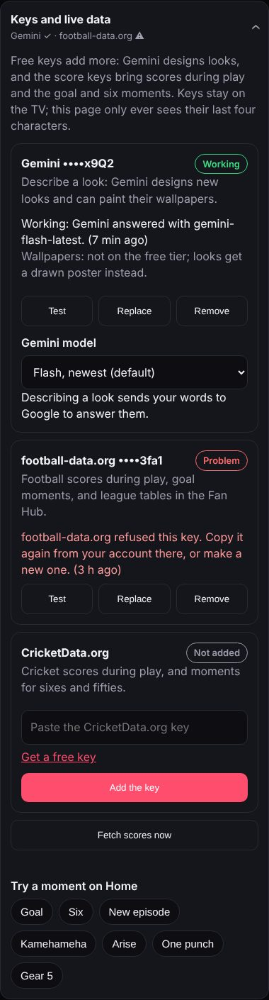

den-tv works without any key. A key is a password a service gives you so den-tv can ask it for more: Gemini designs looks, and the two score services send live scores during play. Each takes a few minutes and costs nothing.
| Key | Adds | Free allowance |
|---|---|---|
| Gemini Google AI Studio | Describe a look: Gemini designs a new look from your words and can paint its wallpaper. | Generous for a TV; Google sets the limits |
| football-data.org | Live football scores during play, GOAL! moments, league tables in the Fan Hub. | Top leagues and cups, 10 calls a minute |
| CricketData.org | Live cricket scores during play, fifty and hundred moments. | 100 calls a day |
Under the key there's a Gemini model choice. Flash (newest) is the default, Flash-Lite is the fastest, and Pro is the slowest and smartest. If your key can't use a model, den-tv falls back to one it can.
Painting wallpapers uses Gemini's image model, which some free keys can't use. The Gemini row then says so, and den-tv draws a poster in the look's colours instead. What you type in Describe a look is sent to Google; on the free tier Google may use it to improve its products, so keep it to looks.

The free plan covers the top European leagues, the Champions League and the World Cup. Matches in other leagues still show, with their scores after the final whistle.
100 calls a day is enough for a match day. The CricketData row shows how many are used today; when they run out, scores pick up again the next day.
Each key has a row on the phone's TV tab › Keys and live data. The TV checks a key when you add it, every time it uses it, and once a day.
| Shows | Means | What to do |
|---|---|---|
| Working | The service answered, with when it was last checked. | Nothing. |
| Problem | "Refused this key": wrong or deleted key. | Copy it again from the service, or make a new one, then Replace. |
| Problem | "Today's free calls are used up". | Nothing. It works again tomorrow. |
| Problem | "The TV couldn't reach…" | Check the TV's internet, then Test. |
| Not added | No key yet. | Optional: follow the steps above. |
Test checks a key now, Replace swaps it, and Remove deletes it from the TV.